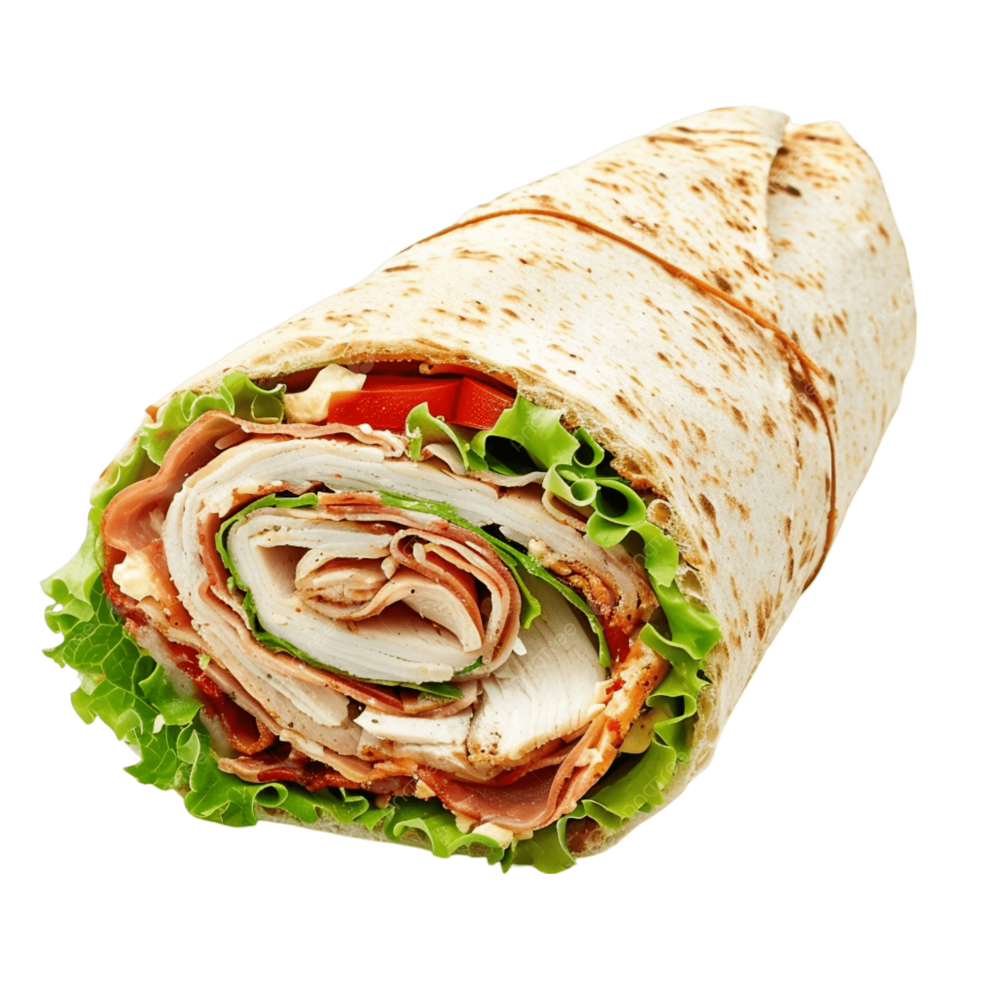

Quick n' Easy Turkey Wraps

Description
These tasty turkey wraps are great for
lunch or sliced into smaller pieces for
little after-school snacks or party appetizers.
Ingredients
- 1 (8 ounce) package cream cheese with chives
- 2 tablespoons Dijon Mustard
- 6 (8 inch) whole heart tortillas
- 1 1/2 cups finely shredded iceberg lettuce
- 12 thinly sliced deli turkey
- 3/4 cup shredded Swiss Cheese
- 6 slices bacon, cooked and crumbled
- 1 large tomato, seed and diced
- 1 large avocado, sliced
Steps
-
Gather all ingredients
-
Mix cream cheese and dijon mustard together until smooth
; spread about 2 tablespoons of cream cheese mixture
on each tortilla, spreading to within 1/4 inch
of the edge.
-
Arrange about 1/4 cup of shredded lettuce on each tortilla
; press lettuce down into cream cheese mixture. Place 2
turkey slices per tortilla over the lettuce, and sprinkle
with 2 tablespoons of shredded Swiss cheese.
-
top each tortilla evenly with crumbled bacon
, bacon, tomato, and avocado slices.
-
Roll each tortilla up tightly; cut in half across the
middle with a slightly diagonal cut.
More Recipes